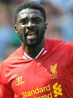
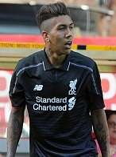

Захисники

Народився: 5 квітня 1991
Місце народження: Стоквелл, Лондон, Англія
Інші клуби: Крістал Пелас (2008-12), Саутгемптон (2012-15)
Прийшов з: Саутгемптон
Ціна: £12.5m, 01.07.2015
Матчі/голи за ЛФК: 52 / 2
Народився: 1 січня 1993
Місце народження: Ліверпуль, Англія
Інші клуби: -
Прийшов з: -
Ціна: -
Матчі/голи за ЛФК: 50 / 1

Народився: 19 березня 1981
Місце народження: Буаке, Кот Д'Івуар
Інші клуби: АСЕК (1994-2002), Арсенал (2002-09), Манчестер Сіті (2009-13)
Прийшов з: Вільний агент
Ціна: 02.07.2013
Матчі/голи за ЛФК: 71 / 1
Народився: Зеніца, Боснія і Герцеговина
Хорватія: Croatia
Інші клуби: Динамо Загреб (2006-10), Інтер Запрешич (оренда, 2006-08), Ліон (2010-13), Саутгемптон (2013-14)
Прийшов з: Саутгемптон
Ціна: £20m, 27.07.2014
Матчі/голи за ЛФК: 77 / 2
Народився: 13 лютого 1990
Місце народження: Париж, Франція
Інші клуби: Парі Сен-Жермен (2002-13)
Прийшов з: Парі Сен-Жермен
Ціна: £15m, 02.09.2013
Матчі/голи за ЛФК: 80 / 3
Народився: 15 грудня 1984
Місце народження: Хандлова, Словаччина
Інші клуби: Тренчин (2001-04), Зеніт (2004-08)
Прийшов з: Зеніт
Ціна: £6.5m, 11.01.2008
Матчі/голи за ЛФК: 320 / 18

Народився: 5 липня 1992
Місце народження: Севілья, Іспанія
Інші клуби: Севілья (2004-14)
Прийшов з: Севілья
Ціна: £12m, 16.08.2014
Матчі/голи за ЛФК: 91 / 3
Народився: 23 травня 1997
Місце народження: Кетфорд, Лондон, Англія
Інші клуби: Чарльтон
Прийшов з: Чарльтон
Ціна: £6m, 20.06.2015
Матчі/голи за ЛФК: 7 / 0
Півзахисники
Народився: 17 червня 1990
Місце народження: Сандерленд, Англія
Інші клуби: Сандерленд (2006-11), Ковентрі (оренда 2009)
Прийшов з: Сандерленд
Ціна: £16m, 09.06.2011
Матчі/голи за ЛФК: 212 / 22
Народився: 12 січня 1994
Місце народження: Франкфурт, Німеччина
Інші клуби: Баварія (2009-13), Байер (2013-14)
Прийшов з: Байер
Ціна: £9.75m, 03.07.2014
Матчі/голи за ЛФК: 89 / 3
Народився: 14 березня 1990
Місце народження: Кармартен, Уельс
Інші клуби: Суонсі (2007-12), Рексем (оренда, 2008)
Прийшов з: Суонсі
Ціна: £15m, 10.08.2012
Матчі/голи за ЛФК: 132 / 7
Народився: 9 січня 1987
Місце народження: Дурадос, Бразилія
Інші клуби: Греміо (2004-07)
Прийшов з: Греміо
Ціна: £5m, 11.05.2007
Матчі/голи за ЛФК: 315 / 6
Народився: 4 січня 1986
Місце народження: Лідс, Англія
Інші клуби: Лідс (1996-2004), Суіндон (оренда, 2003), Ньюкасл (2004-2008), Астон Вілла (оренда, 2005-2006), Астон Вілла (transfer, 2008-2010), Манчестер Сіті (2010-2015)
Прийшов з: Манчестер Сіті
Ціна:0, 01.07.2015
Матчі/голи за ЛФК: 45 / 7
Народився: 10 травня 1988
Місце народження: Сент-Олбанс, Англія
Інші клуби: Саутгемптон (2006-14), Борнмут (оренда 2007)
Прийшов з: Саутгемптон
Ціна: £25m, 01.07.2014
Матчі/голи за ЛФК: 90 / 13

Народився: 2 жовтня 1991
Місце народження: Масейо, Бразилія
Інші клуби: Фігейренше (2009-10), Хоффенхайм (2011-2015)
Прийшов з: Хоффенхайм
Ціна: £29m, 06.07.2015
Матчі/голи за ЛФК: 49 / 11
Народився: 12 червня 1992
Місце народження: Ріо-де-Жанейро, Бразилія
Інші клуби: Васку да Гама (2009-10), Інтер (2010-13), Еспаньол (оренда 2012)
Прийшов з: Інтер
Ціна: £8.5m, 30.01.2013
Матчі/голи за ЛФК: 145 / 28